Most people carried several cards and almost none knew which to use where, leaving real money on the table at every checkout.
What I did
Researched the market and competitors, observed three behavioral archetypes, and designed a privacy-first, location-aware offers app — solo.
Where it landed
A concept and prototype that answers “which of my cards gives the best deal here?” in under three taps.
01Challenge
The problem wasn’t having too few cards. It was knowing too little about the ones you had.
By 2020, the average consumer carried multiple credit and debit cards — each promising benefits, cashback, and discounts from different banks. But there was a catch: almost no one knew which card to use where.
The mental overhead of tracking 3–5 card benefit programs is enormous. Banks communicate offers through emails no one reads, apps no one opens, and PDFs no one downloads. The result? People defaulted to whichever card was on top of their wallet — leaving real money on the table at every checkout.
COVID-19 made this worse. Businesses flooded the market with time-limited cashback promotions, exclusive card deals, and location-specific discounts. The signal-to-noise ratio collapsed entirely.
The business problem
Merchants needed card-eligible customers at their door. Banks needed their cards to be the preferred choice at POS. Neither had a clear channel to reach users at the moment of decision.
The user problem
Consumers had no single, neutral, low-friction place to ask: “Which of my cards gets me the best deal, right here, right now?” Cardinal was designed to answer exactly that question.
1.06B1.06Bcredit/debit cards in the USA
2.8B2.8Bcards in use worldwide
70%70%of adults carry a card
40%40%use cards consistently
60%60%believe payments will be cashless
So what?The market was enormous and growing cashless — but the UX layer between cardholders and their benefits was completely broken. A genuine product gap, not a marginal improvement.
02Research
Starting with the market, then listening to people.
Market research
With 2.8 billion cards globally and growing cashless adoption, the infrastructure for card-linked offers existed — but the consumer-facing discovery layer didn’t. Banks and merchants both had motivation to close this gap. The question was: who was already trying?
Competitive audit
Most card-management apps were either bank-owned (biased toward their own products) or aggregators (feature-heavy, overwhelming, poorly designed). None solved the simple question of “which card should I use at this merchant, right now.”
No competitor offered real-time, location-aware offer discovery
Existing apps required sharing full card numbers or linking accounts — a major trust barrier
Category-based browsing (food, travel, groceries) was rare; most used bank-centric navigation
None designed for the moment of purchase — the 5 seconds before you tap
So what?The competitive white space wasn’t in features — it was in framing. Cardinal could win by being radically simpler and privacy-respecting.
User observations — three behavioral archetypes
The Passive Spender
Uses one card for everything. Doesn’t know their benefits. Not opposed to offers, just never in the mindset to seek them.
The Frustrated Optimizer
Knows their cards have offers. Spends mental energy remembering which is which. Gets it wrong regularly. Mildly resentful of banks.
The Lapsed Chaser
Downloaded 2–3 bank apps. Got overwhelmed. Now ignores all of them. Has mentally given up despite wanting to optimize.
Key findingUsers didn’t want to manage their cards. They wanted to use them better — with minimal overhead at the moment of decision. The product had to intercept users before they paid, not review data after.
03Key insights
What the research actually told us.
At a register5 seconds
At home5 minutes
Drawn to scale: the window to decide at the door is one-sixtieth of the time at home.
The decision happens at the door
“Which card?” is a 5-second question asked at a register, not a 5-minute one asked at home. Cardinal had to be fast, local, and contextual.
Privacy is a non-negotiable unlock
Users distrusted sharing card numbers with third-party apps. Cardinal needed to work with card names, not card numbers.
Location is the killer feature
The highest-value moment was “show me what’s near me, with my cards, right now.” Location-aware surfacing was the differentiator.
Category thinking beats card thinking
Users thought in categories — food, travel, groceries — not card names. “Best food deal today?” is how people actually think.
Favourites are a retention mechanism
Power users wanted to bookmark offers and merchants. A Favourites tab brings users back when they aren’t actively shopping.
Onboarding anxiety is real
First-time setup was the biggest drop-off risk. Onboarding had to be short and low-commitment: no linking, no numbers — just “which cards do you carry.”
04Product strategy
Four principles that drove every design decision.
Principle 1
Radical simplicity over completeness
Cardinal deliberately didn’t show every offer from every bank — it surfaced the most relevant offer at the right moment. A curated, fast experience beats a comprehensive, slow one.
Design decisionBottom nav limited to four tabs — Home, Nearby, Favourite, Profile. No hamburger menu. Every feature within two taps.
Principle 2
Privacy by architecture, not policy
No card numbers, no account linking, no bank login. Cardinal only needed to know which cards a user carried.
Design decision“Add a card” meant selecting a brand from a dropdown, not entering 16 digits — surfaced in onboarding as “Absolutely safe — no need to share card numbers.”
•••• •••• •••• ••••→DBS card ▾
Add a card: pick a brand from a dropdown, not 16 digits.
Principle 3
Location as default context
Instead of making users navigate to nearby offers, Cardinal defaulted to location-aware suggestions.
Design decisionThe Nearby tab loaded with current location pre-set and offers pre-filtered to walking distance; permission requested in context.
Principle 4
Card-attributed, not bank-attributed
Offers displayed as “20% off on DBS card” — tied to the specific card in the user’s wallet, not the bank broadly.
Design decisionOffer cards always showed the card type alongside the value, turning abstract promotions into personal savings.
05Information architecture
One clear path, five destinations.
Cardinal’s architecture was deliberately flat — three levels maximum from any screen to any action, with everything living in the bottom navigation.
Cardinal
Splash screen
Onboarding(new users only)
Welcome 1 — Discover offers on your card
Welcome 2 — Find the right card in your wallet
Welcome 3 — Never miss an offer nearby
Welcome 4 — Absolutely safe, no card numbers
Auth
Login
Registration
Main app(bottom nav)
Home — Personalized offers feed → Add Card → Notifications
Nearby — Location-aware offer map
Set Location · Search · Categories · New Offers
Hotel · Flight · Taxi · Train · Real Estate · Groceries · Food · Bus
* Keeping everything in the bottom nav (no hamburger menu) was the right call; consolidating the Profile tab’s 10+ items would help at V2.
06Design exploration
Building a brand that felt premium, not predatory.
Brand identity
The name Cardinal — a bird known for vivid red plumage and sharp navigational instinct — gave the brand its foundation: directional, confident, sure of where to go. The wordmark =cardinal used a custom equals-sign prefix — a nod to equivalence and comparison (which card equals better value here?).
Smart
Precise
Trustworthy
Calm
Helpful
Tone: knowledgeable friend, not corporate bank.
Color strategy
The palette inverted the typical fintech aesthetic. Most banking apps are white, blue, and corporate — Cardinal went dark, making every offer card pop with warmth. The yellow-gold primary reads as reward, not warning: the color of value and return. A dark UI is also easier to read in the variable lighting of shops and streets — and signals premium.
Onboarding used bold, geometric yellow objects on dark backgrounds — a wallet, a pin, a card, a shield — communicating each value proposition instantly, without photography. Custom illustration in fintech is rare and signals real craft: someone cared how this feels, not just how it works.
07Design system
A system built for speed, legibility, and trust.
Deep NavyApp background
Dark Navy +4%Cards, modals
Yellow GoldCTAs, active states, highlights
BlueNavigation, info states
RedNotifications, expiring offers
WhitePrimary text
White 60%Captions, labels
Offer card
The atomic unit — merchant logo, offer headline, card-name badge, favourite icon. Two states: full-width list and compact map tooltip.
20% offDBS card
CTA — Primary
Yellow-gold background, dark text, full-width. For primary actions: Get Started, Add Card, See Offer.
Get started
CTA — Secondary
Dark-gray background, white text. For alternative actions: Skip, Cancel, Back.
Skip
Bottom navigation
Four tabs — Home, Nearby, Favourite, Profile. Active tab fills yellow-gold; inactive at 50% opacity.
Category chips
Horizontal-scroll pills on Nearby: Hotel, Flight, Taxi, Train, Real Estate, Groceries, Food, Bus.
Map view
Native map with offer pins using the Cardinal “C” mark. Tapping a pin expands the offer tooltip.
Onboarding
Swipe-right pagination with dot indicators — each screen earns its view.
Offer cards
Heart tap = instant favourite, no confirmation. The micro-interaction feels immediate.
Map pins
Tap to expand tooltip, tap tooltip for detail — two taps to conversion intent.
Location permission
Requested in context on first Nearby visit, with a clear why.
08Final experience
Three journeys. One product.
Journey 1 — First-time onboarding
Zero to first offer in under 60 seconds
Fintech onboarding is historically the most abandoned stage — users expect friction, forms, card linking, KYC.
Key moves
Cardinal stripped it to two moments: understand the value, and tell us which cards you carry
Four illustration-led walkthrough screens tell a story — discover, organize, find nearby, stay safe
The “no card numbers needed” safety screen is placed last, after desire is established
DiscoverDiscover offers on your card
OrganizeFind the right card in your wallet
Find nearbyNever miss an offer nearby
Stay safeAbsolutely safe, no card numbers
The safety screen comes last, after desire is established.
You earn trust after you’ve earned attention.
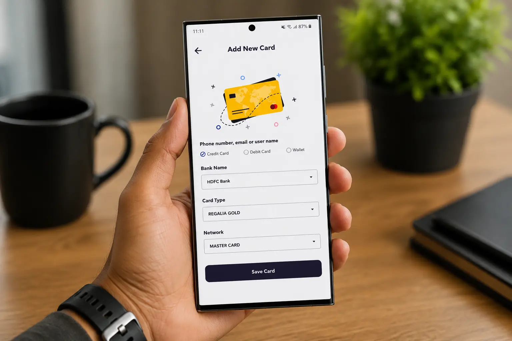
Journey 2 — Home: personalized offers
The right offer within 3 seconds of opening
Generic feeds create noise, not value — if the first offer isn’t relevant, users never reach the second.
Key moves
The card-attributed feed, titled “Offers For You,” tied every offer to a specific card the user added
Each card showed merchant, discount value, and which card it applied to — transforming abstract bank offers into personal value
A “What’s New” section and an always-available Add Card CTA created freshness and a reason to return
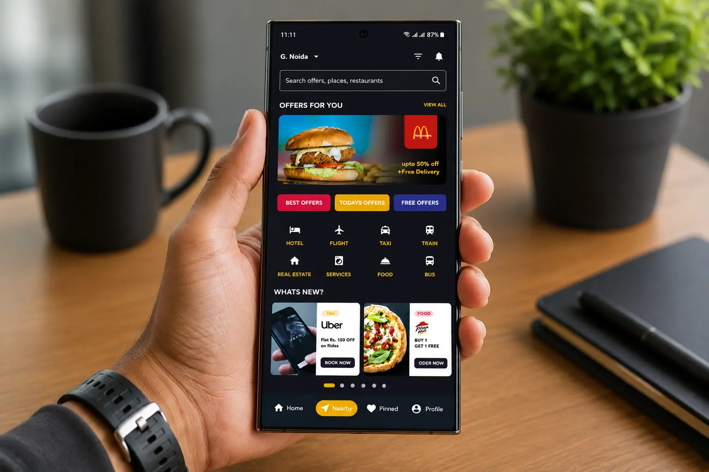
Journey 3 — Nearby: offers in the real world
“What can I save on, right here, right now?” in two taps
The Nearby tab loaded with location pre-set, map view visible, and offer pins already populated — no “search first” friction.
Key moves
A map-first layout matched how people navigate physically, with a scannable list below for those who prefer it
Broad category filters covered daily and occasional spend
Nearby sat second in the nav to signal its strategic importance as the core differentiator
Offers are pre-filtered to walking distance, with your location already set.
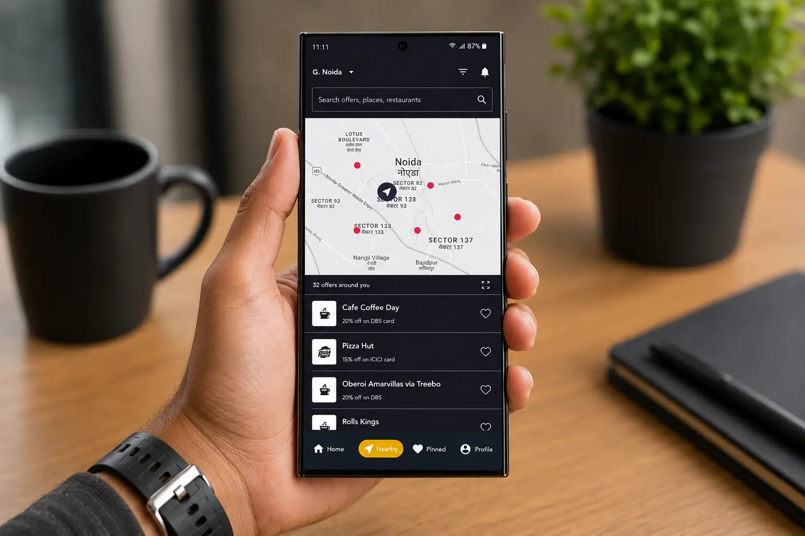
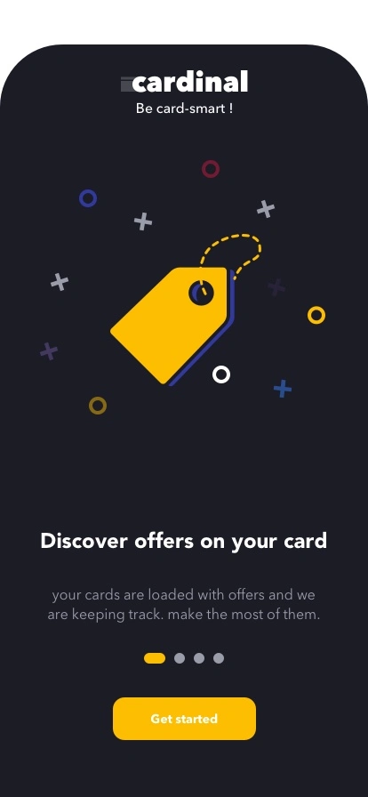
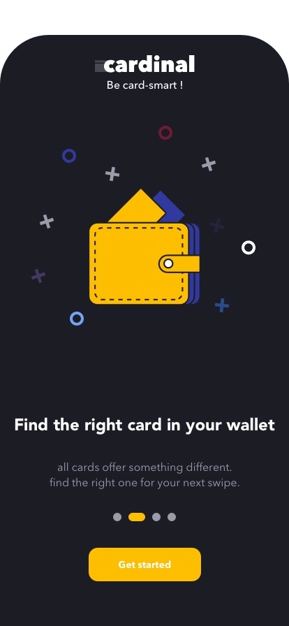
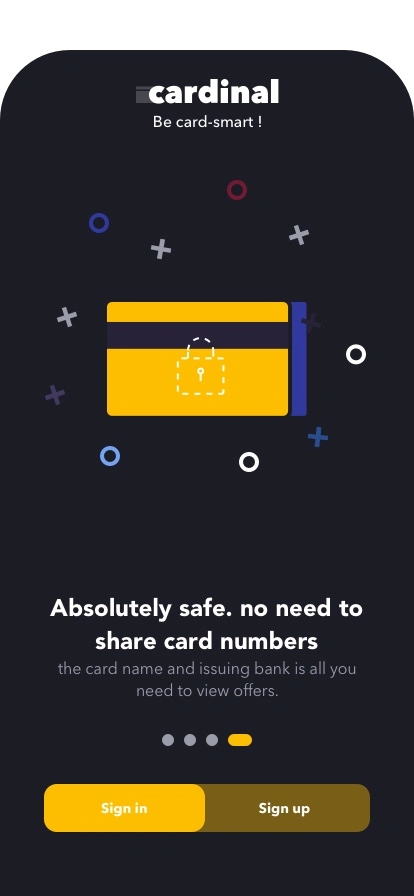
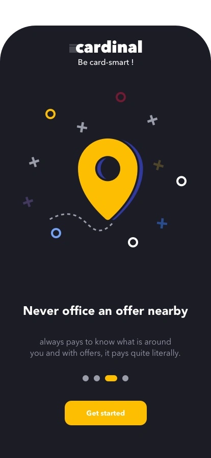
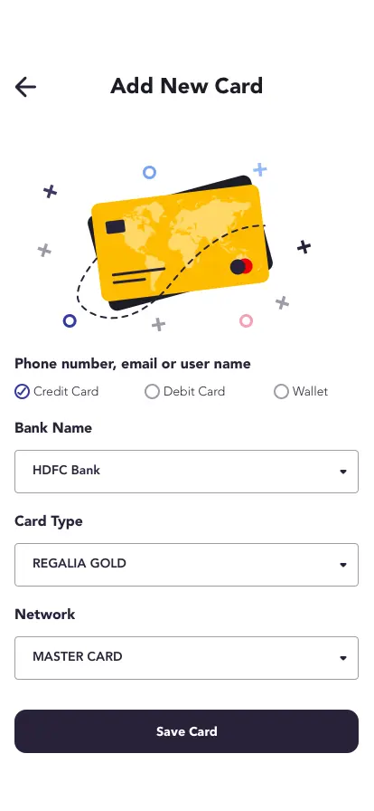
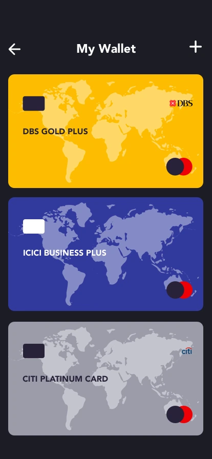
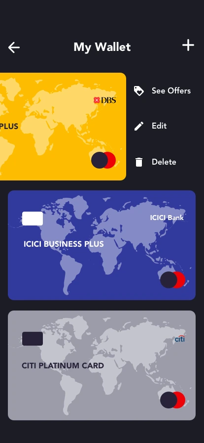
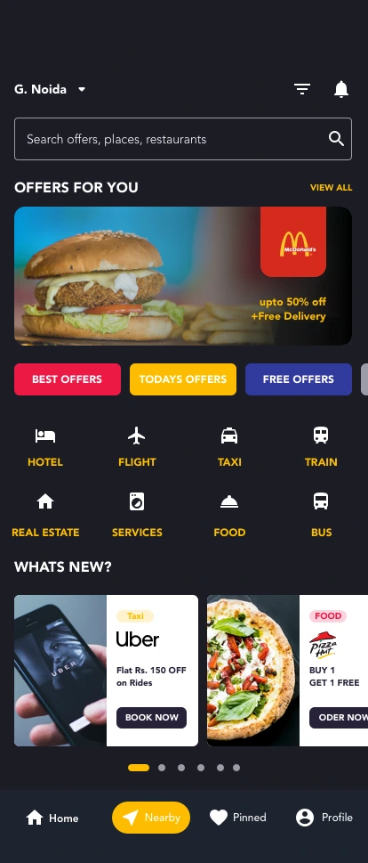
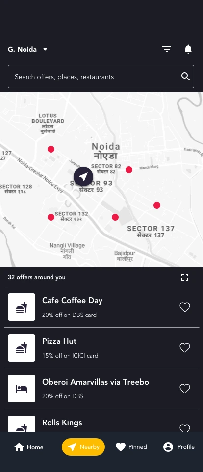
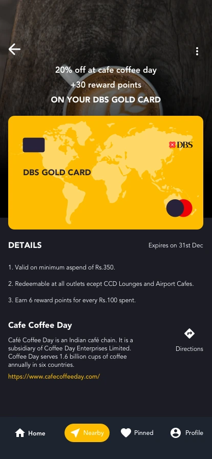
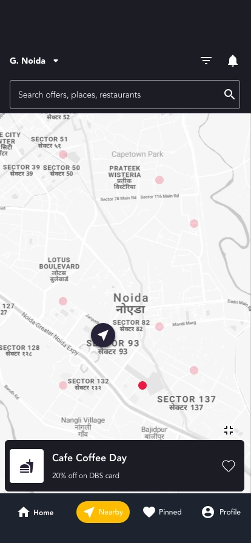
09Outcome
Did Cardinal solve the problem it set out to solve?
Cardinal was a concept and prototype — not a shipped product with measured KPIs. But the outcomes were real at the design level.
Product value
“Which of my cards gives the best deal here?” was answerable in under three taps — a claim no product on market could make in 2020.
User value
The onboarding-to-offer funnel was designed for under 60 seconds. Replacing card numbers with card-name selection structurally removed the primary adoption barrier.
Business value
Cardinal created a neutral aggregation layer between users, banks, and merchants — a position banks and merchants couldn’t credibly occupy, which is why users would trust it.
Design recognition
112 views on Behance at publication; community feedback “clean and neat work,” validating the premium, minimal aesthetic against typical fintech density.
What the prototype proved
Dark fintech UI is viable and desirable when executed with care.
Card-attributed offer surfacing is a coherent, legible pattern.
Location + card ownership is a genuinely novel combination.
Privacy-first architecture is a differentiator, not just compliance.
10Reflection
What I’d do differently. What I still believe.
What worked
The dark-first aesthetic made yellow offer cards feel like rewards — every offer appeared as something earned.
Onboarding earned trust before asking — placing “no card numbers needed” after showing value was the right sequencing.
Card-attributed offers (“20% off on DBS card”) were personal, not a bank ad. Framing matters.
What I’d improve today
Personalization transparency — surface the reason for each recommendation (“because you have a DBS card”).
Empty states — design for no nearby offers or no card matches; that’s where trust is won or lost.
Offer expiry & a real detail screen — add expiry badges and a full offer-detail view (address, terms, how to redeem).
What I learned
The most important design decisions aren’t visual. The privacy architecture (no card numbers), the card-attribution framing, the Nearby tab being second in the nav — these structural choices shaped the entire experience before a single pixel was placed. And constraint produces clarity: with no backend or business model yet, the design had to ask only “if this worked, what would it feel like?”
How AI would change this today
Cardinal in 2020 asked users to bring their own context. Cardinal with AI brings the context to users.
Contextual intent: “heading to lunch in Connaught Place” surfaces card offers before you open a map.
Smart ranking: given location, merchant, and amount — “Use your HDFC card here, save ₹340.”
Natural-language search replaces category chips: “best cashback for groceries this week.”
Proactive expiry alerts and spending-pattern nudges for benefits you keep missing.